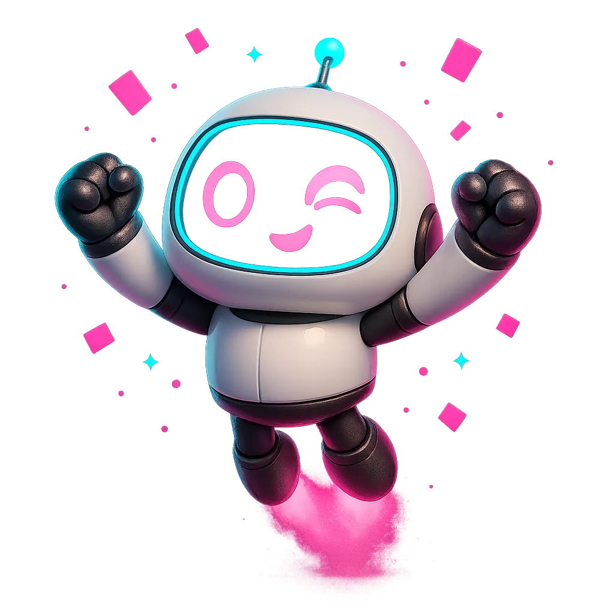
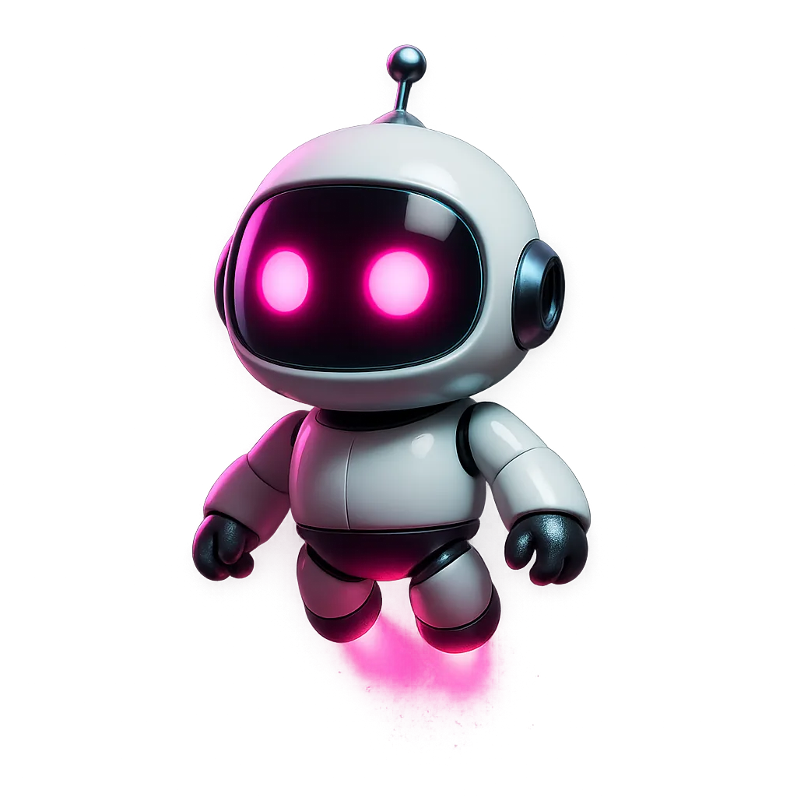

Liquid Clips
Agency · $99.99/mo
Speed
D
Video · Base Window
9:16 vertical
0 regions
type an aspect · 9:16 · 16:9 · 1:1

00:00:32
customer
acquisition
is
the
one
thing
nobody
gets
right
early
#01
0:22
The one thing nobody gets right early
92 hook
#02
0:18
Cold outbound still works in 2026
88 hook
#03
0:27
Why founders undercharge every time
85 hook
This will hit hard.
Creator brief
Uncle Daniel · 15s hook
Duration under 15s
Say the phrase "clips that pay"
Agency watermark visible
REC · 00:00
Safe · 9:16
Source
100
Music
0
Video
Reaction
Caption
Hook
Audio
liquidclips.app/@you
Reactions · Layout
PIP
Top/Bot
Side
Full
Main
70
Reaction
85
Auto-switch
Duck main
Captions · Style
Bold
Pop
subtle
Position
Top
Mid
Bot
Words/line
3
4
5
Karaoke
On · ●
Font
Inter Display ▾
Size
52
Record · Source
Earn
Tutorial · demo Kade
Display
Window
Scr + mic
Scr + audio
Camera only
Frame · Hook
Safe
TikTok ✓
Reels ✓
Shorts ✓
Zoom
1.4×
Text
·
Emphasize
lied to
Duration
1.5s
Audio · Mix
Main
70
Music
30
Lofi 01
Ambient
Trap Chill
Duck
On
Timeline · Zoom
1×
2×
4×
0s5s10s15s
Watermark · Preset
BR · 60
BL · 90
Bar
Handle
liquidclips.app/@you
QR
On
324 views4 signupsMRR live
Campaign · Pick
Uncle Daniel · 015
TastyBites · 042
LC demo · 007
Trim · Selection
Start
00:12.480
End
00:40.960
Duration
00:28.480
Speed
1.0×
Remove silence
Auto-tighten
Split · Options
Orient
Top / Bot
Left / Right
Audio
Source
VO
Mixed
Muted
Captions
On
KADE ASKS
Which layout?
Tap one · Kade continues.

Library · Hormozi + SaaS
Editing · no slot
Kade opens the tool he needs · Ask him something to begin.
Selection
00:12 - 00:34
Style
Color
Camera
Placement
Slot audio
Recent
No asks yet · try one from the side panel or type below.
Ask tests